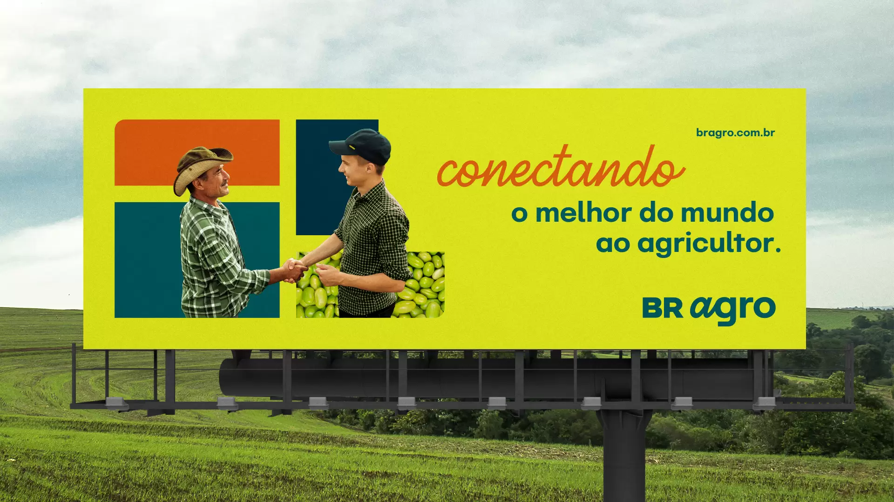

{% extends "post/base.html" %} {% load static %} {% block 'content' %}

<script src="https://code.jquery.com/jquery-3.6.4.min.js"></script>

<div class="content">
  <div class="feed">
    <div class="createPost">
      <input type="text" placeholder="Publique Algo" />
      <ul>
        <button>
          
        </button>
        <button>
          
        </button>
      </ul>
    </div>
    {% block 'trend_buttons' %}{% endblock 'trend_buttons' %}

      {% block 'post' %}{% endblock 'post' %}
   
    
    {% if error %}
    <span> {{ error }} </span>
    {% endif %}
   {% block 'form_pagination' %}{% endblock 'form_pagination' %}
  </div>
  <div class="side">
    <div class="first">
      
      <div class="publi"><p>Aproveite As Novidades</p></div>
    </div>
    <div class="second"></div>
    <div class="third"></div>
  </div>
</div>

<script>
  const activeButton = document.querySelectorAll('.trendButtons')
  function toggleLike(postId) {
    resetDislike(postId);

    var likeButton = document.getElementById("like_" + postId);
    var likeImage = likeButton.querySelector("img");

    if (likeImage.src.endsWith("postPositivo.svg")) {
      likeImage.src = "./../../static/assets/likedArrow.svg";
    } else if (likeImage.src.endsWith("likedArrow.svg")) {
      likeImage.src = "./../../static/assets/postPositivo.svg";
    }
  }

  function toggleDislike(postId) {
    resetLike(postId);

    var dislikeButton = document.getElementById("dislike_" + postId);
    var dislikeImage = dislikeButton.querySelector("img");

    if (dislikeImage.src.endsWith("postNegativo.svg")) {
      dislikeImage.src = "./../../static/assets/unlikedArrow.svg";
    } else if (dislikeImage.src.endsWith("unlikedArrow.svg")) {
      dislikeImage.src = "./../../static/assets/postNegativo.svg";
    }
  }

  function resetLike(postId) {
    var likeButton = document.getElementById("like_" + postId);
    var likeImage = likeButton.querySelector("img");
    likeImage.src = "./../../static/assets/postPositivo.svg";
  }

  function resetDislike(postId) {
    var dislikeButton = document.getElementById("dislike_" + postId);
    var dislikeImage = dislikeButton.querySelector("img");
    dislikeImage.src = "./../../static/assets/postNegativo.svg";
  }

  function initializeCarousel(carouselClass, imagePaths, interval) {
    var carousel = $(carouselClass);
    var currentIndex = 0;

    function showItem(index) {
      carousel.find("img").attr("src", imagePaths[index]);
      //carousel.find('.publi p').text('Saiba Mais!');
    }

    function nextItem() {
      currentIndex = (currentIndex + 1) % imagePaths.length;
      showItem(currentIndex);
    }

    showItem(currentIndex);
    setInterval(nextItem, interval);
  }
  initializeCarousel(
    ".first",
    [
      "./../../static/assets/propaganda1.jpg",
      "./../../static/assets/propaganda2.jpg",
    ],
    5000
  );

  function initializeTrendButtons(selector, activeButton) {
    $(`${selector}:contains("${activeButton}")`).addClass("active");
    function toggleButtons(button) {
      if (!$(button).hasClass("active")) {
        $(selector).removeClass("active");
        $(button).addClass("active");
        activeButton = $(button).text().trim();
      }
    }
    $(selector).click(function () {
      toggleButtons(this);
    });
    $(document).click(function (event) {
      const clickedButton = $(event.target).closest(selector);
      if (clickedButton.length) {
        return;
      }
    });
  }
  {% comment %} $(document).ready(function () {
    initializeTrendButtons(".trendButtons", "Seguindo");
  }); {% endcomment %}

  function setActiveButton(button) {
    var buttons = document.querySelectorAll('.trendButtons');
    buttons.forEach(function (btn) {
      btn.classList.remove('active');
    });
    button.classList.add('active');
  }
</script>

{% endblock 'content' %}
